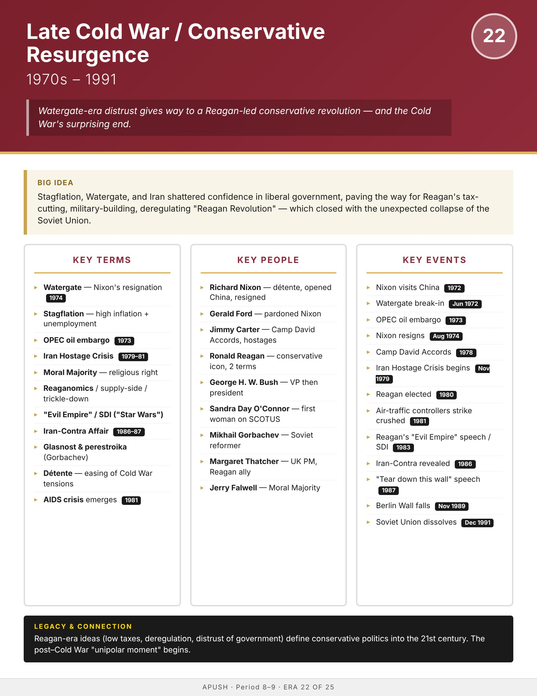

Era
Wise
AP History
AP United States History
Home
Course Sequence
Eras
Exam Prep
DBQ Guides
← Course Sequence
Era 22 of 25 · AP Period 9 · Lesson 54
Late Cold War / Conservative Resurgence
1970s–1991
Open infographic full size
Print

← ERA 21
Vietnam & Social Upheaval
ALL ERAS
Eras index
ERA 23 →
Post–Cold War